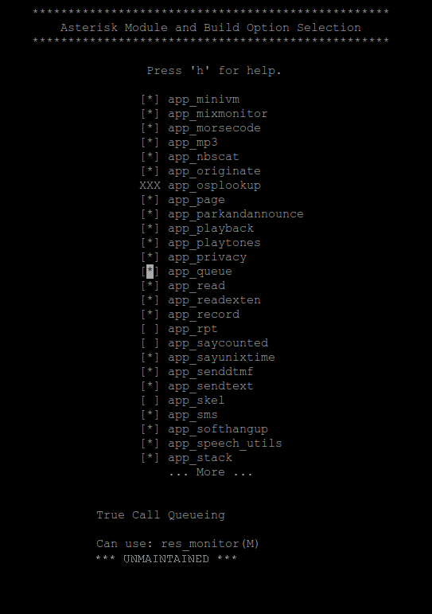
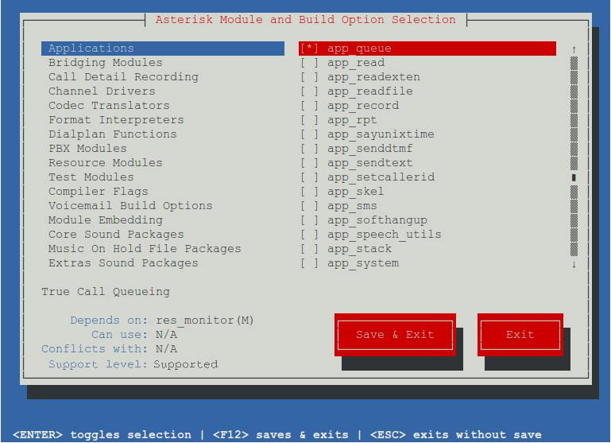

Introduction
In Asterisk, modules can take one of three supported states. These states include:
- Core
- Extended
- Deprecated
The definition of the various states is described in the following sections.
Core
Most modules in Asterisk are in the Core state, which means issues found with these modules can freely be reported to the Asterisk issue tracker, where the issue will be triaged and placed into a queue for resolution.
Extended
This module is supported by the Asterisk community, and may or may not have an active developer. Some extended modules have active community developers; others do not. Issues reported against these modules may have a low level of support. For more information about which extended support modules have an active developer supporting them, see Asterisk Open Source Maintainers.
Deprecated
The module will remain in the tree, but there is a better way to do it. After two release cycles issues that have been deprecated for some time will be listed in an email to the Asterisk-Dev list where the community will have an opportunity to comment on whether a deprecated module: still compiles, works sufficiently well, and is still being utilized in a system where there is a justification for not using the preferred module.
MODULEINFO Configurations
At the top of modules there is the ability to set meta information about that module. Currently we have the following tags:
- <defaultenabled>
- <use>
- <depend>
The meta data added to MODULEINFO in the module causes data to be generated in menuselect. For example, when you use <defaultenabled>no</defaultenabled> the module will not be selected by default. We would use the <defaultenabled> tag for deprecated modules so that they are not built unless explicitly selected by an Asterisk administrator.
Adding New Metadata
On top of the existing tags, we would add two additional tags to communicate via menuselect that a module was extended or deprecated (and what module supersedes the deprecated module). These tags include:
- <support_level>
- Example: <support_level>deprecated</support_level> -- This module would be deprecated. Maintenance of this module may not exist. It is possible this module could eventually be tagged as deprecated, or removed from the tree entirely.
- <replacement>
- Example: <replacement>func_odbc</replacement> -- The replacement for this module is the func_odbc module. This is used when the <support_level> is set to deprecated.
Menuselect Display
The following two images show the suggested menuselect output based on the addition of the <support_level> and <replacement> tags. This would be a new line that has not been used before, and therefore would be added to menuselect as that new line.
If the deprecated value is used, then the value between the <replacement> tags will replace the value of app_superQ as shown in the image below. The text surrounding app_superQ would be static (same for all modules that used deprecated).
If the <support_level> tag is used, then the value of extended would cause the additional text of ** EXTENDED ** to be displayed.

Display in menuselect-newt for supported modules. If no <support_level> is specified, then it is assumed the module is supported:

Display in menuselect-newt for extended modules:
Display in menuselect-newt for deprecated modules:
{kind=link}
{kind=link}
{kind=link}
{kind=link}
{kind=link}